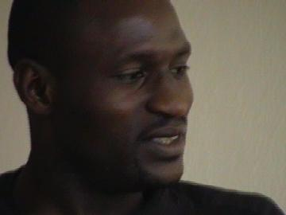
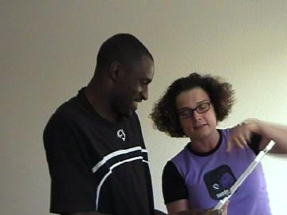
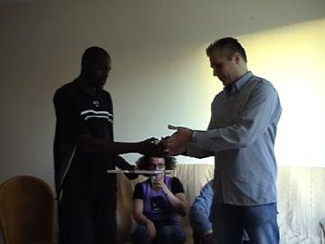
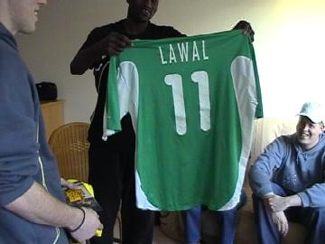
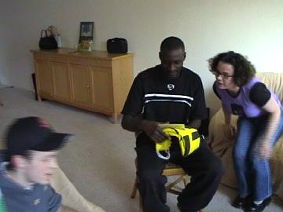
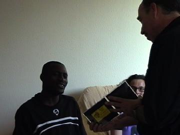
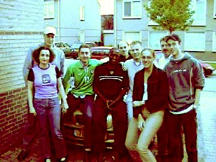
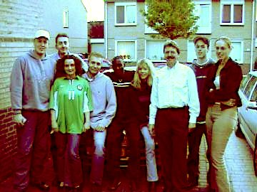
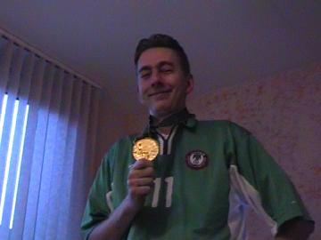

|
Afscheid van Garba Lawal (7 mei 2002) |

Na 5 seizoenen bij Roda JC gediend te hebben gaat de
Nigeriaanse international Garba Lawal zijn carrière bij
een nog onbekende club voortzetten.
Nadat hij na afloop van de laatste thuiswedstrijd tegen
RKC in de bloemetjes werd gezet, volgt er vandaag een
afscheid door een aantal Garba-fans welke verenigd zijn
in de EOVGLFC "LAWALHALLA".

Hier overhandigt Danniëlle aan Garba een prachtige
ingelijste oorkonde.

Maurice overhandigt namens het FP/SV de trofee van
"beste speler van het jaar".

Garba heeft ook een verrassing. Het shirt waarin hij
voor de Green Eagles, het nationale elftal van Nigerië
speelde.

Lawal bekijkt een foto en de Garba-vaan die hij van
Rick heeft gekregen.

Dan is er nog een ceedee-rom voor Garba maar helaas
heeft deze (nog) geen computer.

Poseren voor de BMW......

.....die in juli teruggaat naar de dealer.

Michel poseert met de medaille die Garba met het
olympisch elftal in Atlanta won.
©KPD